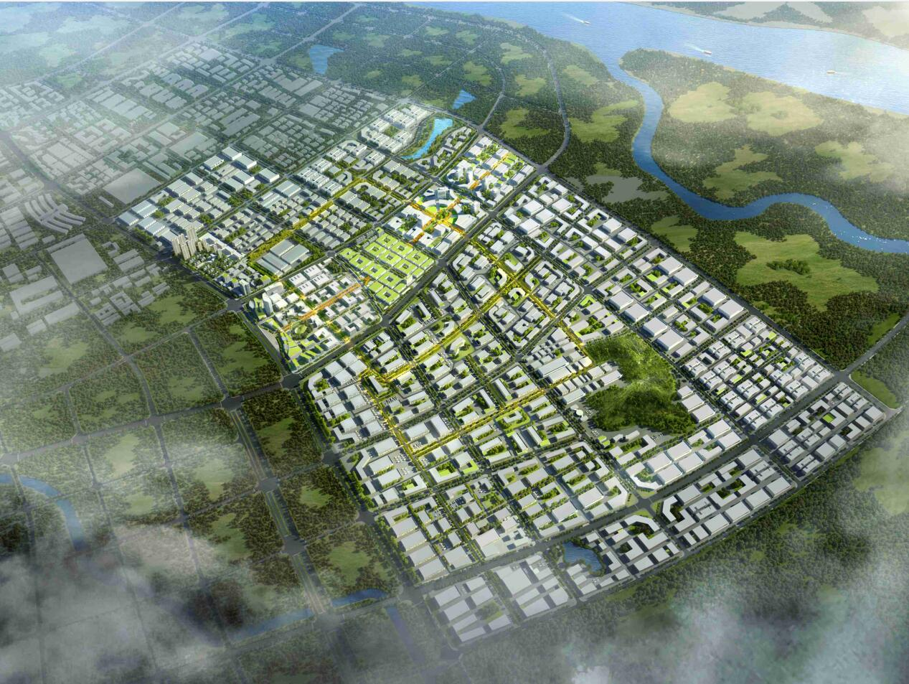

<!DOCTYPE html>
<html lang="en">

<head>
  <meta charset="UTF-8">
  <meta http-equiv="X-UA-Compatible" content="IE=edge">
  <meta name="viewport" content="width=device-width, initial-scale=1.0">
  <title>抚州高新区生物医药产业园孵化器</title>
</head>
<style>
  html,
  body {
    padding: 0;
    margin: 0;
    background-color: rgba(42, 138, 248, .1);
    font-size: 0;
  }

  img {
    margin: 20px 8px 0px;
    width: calc(100% - 16px);
    height: auto;
    background-color: white;
  }

  h3 {
    font-size: 24px;
    text-align: center;
  }

  h4 {
    font-size: 20px;
    text-align: center;
  }

  h4>span {
    background-color: white;
    padding: 4px 16px;
    position: relative;
    font-weight: bold;
    letter-spacing: 0.1em;
  }

  h4>span::after {
    content: '';
    width: calc(100% + 8px);
    height: 100%;
    position: absolute;
    top: 4px;
    left: -4px;
    background-color: blue;
    z-index: -1;
  }

  p.p {
    margin: 0 8px 8px;
    font-size: 16px;
    padding: 8px;
    background-color: white;
  }
</style>

<body></body>
<script>
  (function () {
    var innerHTML = `<h3>抚州高新区生物医药产业园孵化器</h3>`
    var innerContent = [
      {
        title: "才子之乡",
        content: "抚州隶属江西省，国务院确定的海峡西岸经济区20个城市之一，是江西省第一个纳入国家战略区域性发展规划的鄱阳湖生态经济圈和原中央苏区重要城市之一，被誉为“天然大氧吧”，自古有“襟领江湖，控带闽粤”之称！",
        topImgSrcs: ["./image/1.jpg"]
      }, {
        title: "医学背景",
        content: "盱江医学：千百年来，抚州涌现出了数百位闻名于世的杰出医药学家，在江西境内形成了理论丰富、著作丰硕、临床诊疗技术独特、传承久远的医学流派——“旴江医学”。旴江医学具有名医多、医著多、理论渊源、专科特色鲜明、独创“建昌帮”特色炮制技术等特点。",
        topImgSrcs: ["./image/2.jpg"]
      }, {
        title: "高新生物",
        content: "2021年，国家高新区是科技战“疫”的主战场，积极推动病毒检测、疫苗、药品等疫情防治领域创新，为打赢疫情阻击战贡献了“高新”力量。2021年，国家高新区主动作为，不断创新，逆势增长势头强劲，成为区域经济高质量发展的主引擎。抚州国家高新区：高新区势必承担起为国家创新发展探路、高质量发展探路的重大责任。生物医药产业作为抚州高新区的三大主导产业之一，把生物医药作为重要支柱产业来培育，呈现出蓬勃兴盛的态势，以博雅生物、珍视明药业为龙头，大力发展生物医药产业，形成了完整的集生物医药研发、生产为一体的产业集群。",
        topImgSrcs: ["./image/3.jpg"]
      }, {
        title: "产业园区",
        content: "抚州高新区生物产业园打造“高端引领”的生物医药产业发展服务聚集区，带动生物医药产业、中医药及康养产业发展，促进生物医药企业以及人才聚集，规模化生物医药产业创新集群。产业园根据产业布局，将细分为十一大产业功能区，分为生物医药区、中医药区、化合药生产区、医疗器械区、物流仓储区、生活配套区、生产研发服务区、保健品区等等。",
        topImgSrcs: ["./image/4.jpg", "./image/5.jpg"]
      }, {
        title: "孵化器",
        content: "孵化器是一个生产企业的企业。孵化器以培育企业而创造价值，以发现创业者的潜在价值并培育创业企业的市场价值，来实现孵化器自身的增值。孵化器的本质是驱动创新。创新是“生长”出来的，而不是刻意“建设”出来的。在新经济的发展过程中，不断涌现的新增长点正是孵化的“种子”，不断融入的创业投资和产业要素就是注入的养份，孵化器就是种子成长的土壤，资源整合的载体。孵化器运营的关键是要营造一个有助于创新“生长”的土壤。孵化器能带给创业项目更多的帮助，在于帮助项目少走弯路，提高项目进度，增加工作环境的愉悦感，定制匹配的导师和服务，以及孵化器本身品牌的背书。孵化器的瓶颈不在于场地和投资，而在于项目咨询服务。孵化器应专注核心孵化服务，外包所有基础服务。我们即将进入一个反向的创业项目挑选投资人的时代。",
        topImgSrcs: ["./image/6.jpg", "./image/7.jpg", "./image/8.jpg", "./image/9.jpg"]
      }
    ]
    for (var index = 0; index < innerContent.length; index++) {
      var element = innerContent[index];
      if (element.title) {
        innerHTML += `<h4><span>${element.title}</span></h4>`
      }
      if (element.topImgSrcs && element.topImgSrcs.length > 0) {
        for (var i = 0; i < element.topImgSrcs.length; i++) {
          var item = element.topImgSrcs[i];
          innerHTML += ``
        }
      }
      if (element.content) {
        innerHTML += `<p class="p">${element.content}</p>`
      }
    }
    document.body.innerHTML = innerHTML
  })()
</script>

</html>